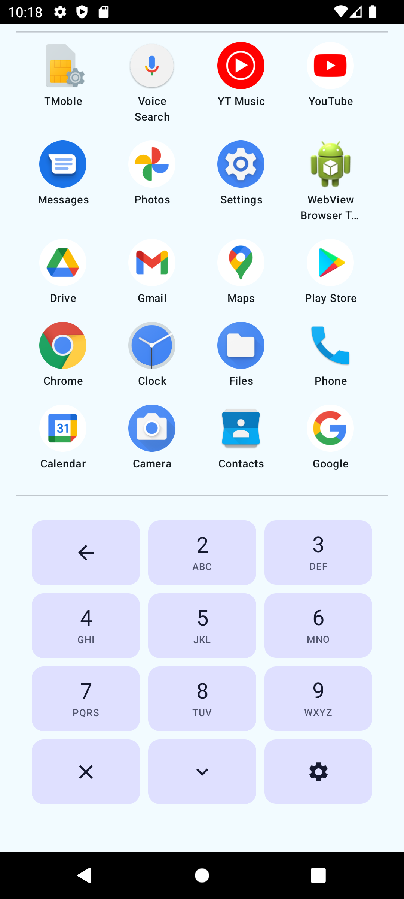
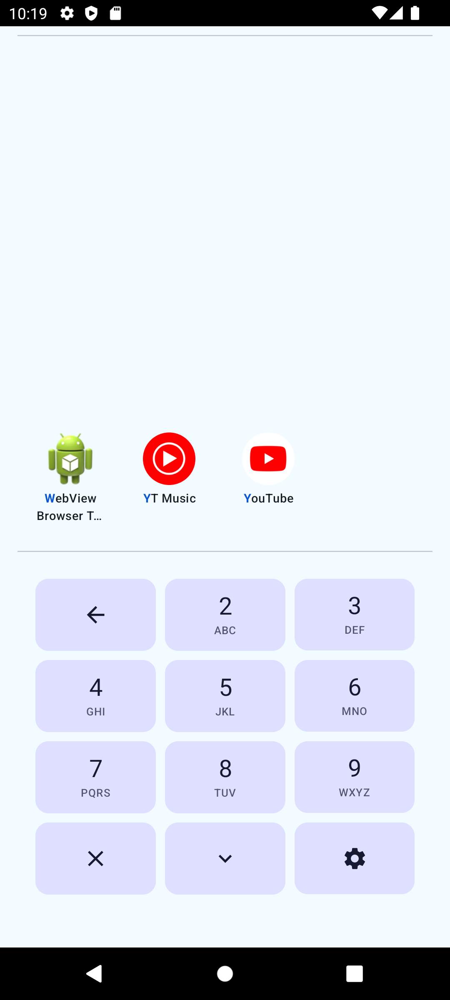
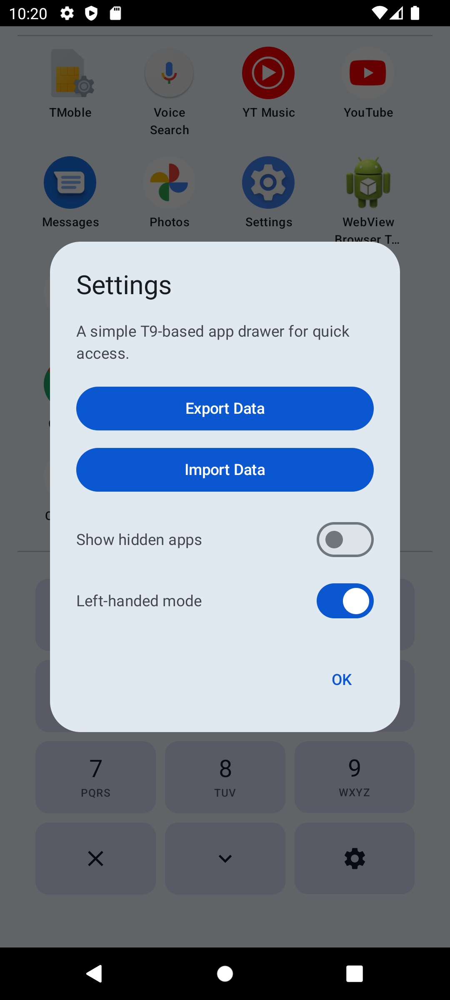

Quick9 Drawer
Fast, keyboard-driven Android app search.
Fast, keyboard-driven Android app search.

A fast, keyboard-driven Android app drawer inspired by App Swap. Use the T9 keypad interface to search and launch apps at lightning speed.



Quickly narrow down apps using a 3x4 T9 keypad. Supports English and normalized characters.
Automatically launches the app if the search query is 2+ characters long and there is exactly one candidate.
Prioritizes apps with higher launch counts. Ties are broken by ascending name order.
Protect specific apps using Android's biometric authentication (Fingerprint, Face, PIN). (Pro upgrade).
MIT License